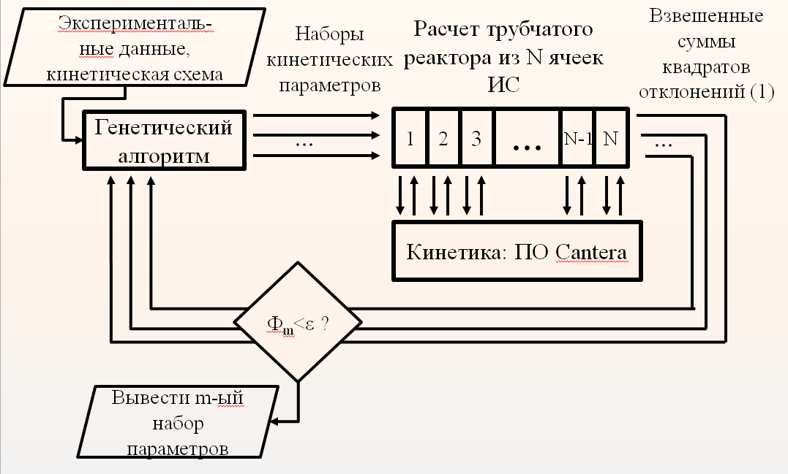

- Заметки
- mech_optimiz в настоящее время работает только на Linux-системах.
Идея и общая логика программы
Назначение программы заключается в ассистировании химику-исследователю в изучении механизма каталитического процесса и инженеру при разработке новых и совершенствовании существующих решений, относящихся к проведению каталитических процессов. Такие решения могут касаться: 1) конструкции аппаратов (тип катализатора, геометрия реактора) 2) режима работы (выбор оптимальных параметров для эксплуатации - температуры, концентраций, создание оптимальных температурных профилей).
На данный момент (2015 год) программное обеспечение (ПО) mech_optimiz ограничено процессами:
- гетерогенно-каталитическими, без учета реакций в газе/жидкости;
- стационарными.
В случае реактора неподвижного слоя катализатора учет фазы катализатора отдельно не производится, используется псевдогомогенная модель. Движение катализатора также не может на данный момент учитываться.
Математически рассматриваются однофазные многокомпонентные течения, в том числе - для катализатора неподвижного слоя - модель пористой среды. Фаза катализатора при этом отдельно не рассматривается.
Кинетические параметры могут зависеть только от степеней покрытия поверхности интермедиатами, но, например, не зависят давления.
Начальная идея программы - осуществлять поиск кинетических параметров с помощью параллельного генетического алгоритма. Это реализовано в версии 1.
Затем, в версии 2, появился учет термодинамических ограничений на значения кинетических параметров. Версия 3 добавила явный и неявный решатели ячеечной модели. Дальнейшее развитие программы в версии 3.2 и 4 связано, преимущественно, с модернизацией этих решателей.
В версии 4 появились несколько ключевых компонентов: анализ идентифицируемости, тесты для некоторых функций и классов, интеграция с базой данных под управлением mongodb, возможность анализа данных и поиска закономерностей в них, "массированный" анализ чувствительности к изменению параметров, наконец, минимизация производства энтропии, минимизация расхождения между изменением энтропии за счет внешнего обмена и протекания внутренних необратимых процессов (что выполняется в стационарном состоянии по закону сохранения).
Более полную информации о версиях 1-3 вы найдете в документе Версии.
Вся информация об изменениях в 4-ой версии присутствует в истории коммитов с исходным кодом в системе git, что связано с переходом на систему контроля версий git.
Общая логика программы (рассмотрим только подбор кинетических параметров как центральную функциональную возможность программы) может быть проиллюстрирована схемой:

После задания параметров расчета начинается итерационный подбор параметров кинетического механизма с помощью генетического алгоритма бинарного кодирования.
Генетический алгоритм содержит множество особей, которые в зависимости от значения целевой функции имеют разную вероятность
а) передать гены потомку
б) перейти на следующую итерацию.
Чем меньше значения целевой функции, тем эти вероятности выше.
Хромосомами являются значения кинетических параметров. Используется бинарное кодирование. Отдельный 0/1 называется геном, конкретное значение - аллелем, а позиция гена в хромосоме - локусом.
Особями являются наборы кинетических параметров (мы их называем "механизмы"). В данном случае уровень хромосомы нами отдельно не рассматривался (скажем, как как класс ООП), все хромосомы (кинетические параметры) кодировались в бинарном виде в виде одной склеенной строки (в коде - geneline).
В результате итерационной процедуры мы получаем наилучший набор кинетических параметров (с некоторой долей притязания на глобальный характер наилучшего решения - что зависит от методики поиска и его длительности).
Еще раз отметим, что генетический алгоритм использует бинарное кодирование. Каждый кинетический параметр можно кодировать строкой из разного количества нулей и единиц (бит, или генов). Число бит, используемое для кодирования значения одного кинетического параметра, является важной характеристикой, влияющей на точность решения и скорость сходимости к оптимуму. Чем больше количество бит, тем скорость сходимости ниже, но возможно найти более точное решение задачи оптимизации (поиска кинетических параметров) при неизменности границ поиска для каждого параметра.
Границы поиска по каждому кинетическому параметру задаются пользователем в файле настроек (этот файл еще будем называть конфигурационным файлом). Каждый параметр в ГА бинарного кодирования будет кодироваться дискретно, число уровней
Приведем пример. Пусть нижняя граница поиска параметра равна 10, верхняя равна 52. Для трех бит имеем: \(2^3=8\). Тогда, получим, следующие возможные значения уровней и параметра:
Уровень: 0 1 2 3 4 5 6 7
Параметр:10 16 22 28 34 40 46 52
По существу, в генах ГА осуществляется хранение значений уровней, а не самих параметров. Когда необходимо для определенного параметра поставить в соответствие значение уровня и самого параметра, используется информация о нижней и верхней границе диапазона поиска параметра и о числе бит, используемых для кодирования значения уровня.
Все генетические операторы применяются к представлению значений уровней в коде Грея.
На каждой итерации подбора параметров вычисляется значение целевой функции, как суммы квадратов отклонений между экспериментальными и расчетными данными (моделирование) по конверсии. Кроме того, перед расчетом целевой функции может осуществляться изменение кинетических параметров отдельных стадий для достижения термодинамической непротиворечивости набора кинетических параметров. Отклонение от математической непротиворечивости в кинетических параметрах есть некоторая уступка, на которую мы вынуждены идти для улучшения качества подбора. Это связано и с недостатками часто используемого в кинетике предположения - независимости энергии активации от температуры, что не является истиной, особенно это сказывается на несогласованности с термодинамикой при построении кинетического механизма для больших температурных интервалов. Это связано и с небольшой погрешностью, заложенной в табулированных значениях термодинамических свойств веществ (в данном случае, газов). Отклонение от непротиворечивости может (и, как настаивает автор, должно!) учитываться в целевой функции при подборе, эта возможность реализована в программе.
- Заметки
- Для грамотного использования возможностей программы по термодинамическому согласованию кинетических параметров поверхностных реакций, вы должны правильно составить файл с настройками алгоритма согласования (см. Синтаксис файла с параметрами алгоритма обеспечения термодинамической непротиворечивости), а также выбрать базу данных со свойствами веществ, применимую к диапазону температур ваших экспериментальных данных (см. thermoTemperatures).
Как правило, мы используем модифицированное уравнение Аррениуса
\[ k_r = A_rT^{\beta_{r}}e^{-E_{r}/{RT}} \]
для записи константы скорости стадии r, поэтому, основные кинетические параметры, используемые нами, это:
A - предэкспоненциальный множитель;\(\beta\) - показатель степени при температуре;E - энергия активации стадии. Также возможен учет латеральных взаимодействий (подробнее - см. Учет латеральных взаимодействий в mech_optimiz ).
После вычисления значений целевой функции производится отбор особей на скрещивание (кроссинговер). Скрещивание может быть выполнено трех типов: 1) одноточечное (обмен одной из частей хромосомы) 2) многоточечное (обмен каждой второй частью хромосомы) 3) однородное (побитовый обмен в произвольных местах хромосомы)
Параллелизация вычислений на данный момент происходит:- по данным (каждый поток обрабатывает свои данные - а именно, рассчитывает целевую функцию для своего набора кинетических параметров, который является фенотипом особи).
Таким образом, реализован достаточно крупнозерновой параллелизм независимых ветвей.
- внутриузловой (использована технологии Pthreads).
Так, mech_optimiz может быть запущена только внутри одного вычислительного узла или на системе с общей памятью (shared memory, SMP-система).
Мультистартовый поиск реализуется одновременным или последовательным запуском нескольких копий программы. Число копий программы, запушенных одновременно, ограничено лишь возможностями системы (количество процессов, объем оперативной памяти).
Для работы программы в большинстве режимов (кроме режима тестирования) необходимо подать на ее вход конфигурационный файл. Конфигурационный файл - это набор строк определенной структуры и синтаксиса с информацией для mech_optimiz.
В файле можно выделить два типа строк: строки, начинающиеся с ключевого слова, и строки, принадлежащие секциям.
Общая структура файла такова:
- строка_с_типом_задачи
- строка_параметров_запуска
- другие_строки
Имеется следующий приоритет использования параметров запуска:
- Из строки параметров запуска в save-файле;
- Из строки параметров запуска конфигурационного файла;
- Параметры по умолчанию (заданы в коде программы).
Парсер конфигурационного файла разбирает начала файла следующим образом:
- Если в первой строке первое слово (до пробела) не является одним из разрешенных типов задачи, то принимается тип задачи RKP. Разрешенные типы задачи:
- RKP - обратная кинетическая задача;
- THERMCON - оценка термодинамической непротиворечивости кинетического механизма (немного устаревшее);
- THERMCONAE - оптимизация с помощью ГА значений кинетических параметров для обеспечения термодинамической согласованности с заданными термодинамическими функциями (энергия Гиббса, энтропия, энтальпия) для поверхностных частиц;
- FUNCTION - оптимизация функции (под каждую функцию необходимо писать отдельный класс с кодом, ее реализующий);
- CLUSTERING - кластеризация данных и метод главных компонент.
- Если во второй строке файла первым параметром является число, то проверяется длина строки. Если она больше 3, то это строка с параметрами запуска программы для типа RKP.
Если же параметров 3 и менее, значит мы имеем специфичную строку настроек для оптимизации функции или одного из типов THERM... В этом случае, а также в случае, если первый параметр не являлся числом, мы добавляем фиктивную строку перед данной строкой. Это делается для того, чтобы унифицировать количество предварительных строк для всех типов задач. Так, настройки и входные данные, специфичные для решаемой задачи всегда будут начинаться с третьей строки файла. При описании синтаксиса файлов мы будем придерживаться ***следующих обозначений***: круглые скобки означают обязательный параметр, где выбирается один вариант из перечисленных в скобках: (y,n)
Квадратные скобки означают необязательный параметр: [ADDEQUATIONS ...]
Многоточие вместо строки означает, что далее следует однотипная с предыдущей/ими строка; внутри строки многоточие означает, что информация представлена подробно в отдельном подразделе, и следует обратиться к нему для уточнения синтаксиса.
Режим подбора кинетических параметров
Строка запуска
./mech_optimiz (конфигурационный_файл,g) [save-file поверхностный_механизм.inp газофазный_механизм.inp термодинамические_свойства.inp]
- Итак, для первого аргумента имеется две опции:
- либо задается конфигурационный файл (см. Синтаксис конфигурационного файла);
- либо выполняется запуск программы в GUI-режиме (опция g).
- Второй аргумент - файл с сохраненным решением предыдущего запуска. Важно, чтобы для этого файла и конфигурационного
- совпадало число подбираемых кинетических параметров (число параметров, заявленных в секции PARAMETERS конфигурационного файла должно быть равно числу полей минус единица для второй и последующих строк save-файла. Единицу отнять нужно потому, что в save-файл строка помимо фенотипа каждой особи ГА содержит в первом столбце и значение функции приспособленности (в данном случае, равной целевой функции, приспособленность считается лучше, если эта функция ниже)
- совпадала базовая версия программы (например, 4. 4 версия программы также совместима с save-файлами 2 и 3 версии);
save-файлы создаются программой на каждой итерации и имеют название вида:
<имя_конфигурационного_файла>-<номер_итерации>
- Третий-пятый аргументы, задают имена файлов (возможно, вместе с путями, относительными, либо абсолютными) для поверхностного механизма, газофазного механизма (который в решаемых mech_optimiz задачах содержит не реакции, а лишь только список газофазных веществ) и файла с термодинамической базой данных в формате CHEMKIN Thermo File.
По умолчанию, используются следующие имена файлов:
- поверхностный механизм: mech.inp
- газофазный механизм: gas.inp
- термодинамические свойства: thermo.dat Вместо пятого параметра можно указать "+".
- + - искать термодинамические свойства веществ в файлах с газофазным механизмом реакции и поверхностным механизмом (а не в специальном файле, по умолчанию - thermo.dat).
За эту логику отвечает фрагмент кода (mechTransferParam.cpp): filenames.append(mechfile);
filenames.append(gasfile);
if (thermofile=="+")
{
imax++;
}
else
{
filenames[0]=thermofile;
}
./mech_optimiz settings.txt settings.txt-10 n +
Синтаксис конфигурационного файла
Для режима подбора кинетических параметров файл имеет следующую структуру:
- [RKP]
- [строка_параметров_запуска]
- CASE ...
- ...
- CONVERSION_(molar_conc,mole_fr,mass_fr)[_e][_o] [COVRATIO] ...
- [ENTROPY PRODUCTION ...номер_реакций...
- (y,n) (y,n) (y,n)]
- [ADDEQUATIONS (dPdVr dVdVr CONVERSION_REL_ERROR)]
- [ADDPARAMS T0 <number>]
- [MEAN_COVERAGES]
- [MOVE_BOUNDARIES]
- [RESPECT_BOUNDARIES]
- [DBNAME <name_of_db>]
- [WRITEBOUNDARIES]
- [USE_SOBOL_NUMBERS <path_and_filename_to_counter>]
- [UNITS E KJOULES/MOLE]
- [NO_TC]
- [CHECK_LIMITATIONS_LEVEL]
- PARAMETERS
- (номер_реакции (y,n) (y,n) (y,n) число число число [число]
- k строк вида
число число [число]
где k=сумма значений, начиная со второго, из предыдущей строки, причем y считается за 1, n за 0.
- ...
- ACTIVITY ...
Комментарии в файле настроек
Любая строка, начинающаяся с восклицательного знака (!), воспринимается как пользовательский комментарий и игнорируется.
Первая строка
Строка с типом задачи для поиска кинетических параметров должна иметь значение RKP, что расшифровывается как Reverse Kinetic Problem (обратная кинетическая задача). Если строка опущена, по умолчания подразумевается тип задачи RKP.
Cтрока параметров запуска
В первой строке задаются параметры генетического алгоритма и пути к файлам. Синтаксис некоторых строк (в том числе - этой) будем пояснять на примерах.
0 8 1.0 l5.txt gas.inp mech.inp 16 44 5000 28 32 8 120
В строке параметров запуска указываются:
- 0 - номер начальной итерации;
- 8 - число бит в генах;
- 1.0 - требуемое значение целевой функции, когда останавливается расчет;
- l5.txt – относительный путь к файлу с настройками расчета;
Позволяет вместо файла с настройками, поданного на вход mech_optimiz, можно использовать другой файл, указанный в данном поле. Так, для команды если файл l200.txt содержит строку параметров "0 8 1.0 l5.txt ...", после чтения типа задачи и строки параметров запуска из l200.txt остальные строки, начиная с третьей, будут считаны из файла настроек l5.txt. Вместо относительного пути можно использовать абсолютный: /home/study/mechanism5/l5.txt
Можно поставить '*' вместо указания файла, тогда в качества файла настроек будет использован файл, поданный на вход mech_optimiz.
- gas.inp - имя файла с газофазным кинетическим механизмом (нужен для считывания газофазных веществ в механизмах формата CHEMKIN-II, сами механизмы пока игнорируются); Аналогично конфигурационному файлу, можно производить указание абсолютного пути для файла. Можно поставить '*' вместо указания файла, тогда gas.inp использоваться не будет.
- mech.inp - имя файла с поверхностным кинетическим механизмом (surface kinetic mechanism) (в формате CHEMKIN-II); Аналогично конфигурационному файлу, можно производить указание абсолютного пути для файла.
Только первые 6 параметров являются обязательными в строке параметров запуска. Последующие параметры могут быть заданы или все разом опущены:
- 16 - число потомков, создаваемых на каждой итерации генетического алгоритма;
- 44 - максимальное число потоков (Pthreads) - особей ГА, создаваемое программой. Если число рассчитываемых хромосом превысит число потоков на какой-либо итерации, будет произведено разделение популяции на части по числу потоков;
- 5000 - максимальное число итераций генетического алгоритма (ГА);
- 28 - число хромосом в популяции генетического алгоритма;
- 32 - вероятность мутации бита при выполнении операции кроссинговера ГА, %;
- 8 - вероятность инверсии бита при выполнении операции кроссинговера ГА, %;
- 120 - число секунд на расчет одной экспериментальной точки (dataPoint).
В случае некорректного задания параметров (отрицательные значения), будут использованы следующие значения по умолчанию:
- число бит в генах: 8;
- требуемое значение целевой функции: 0.01;
- имя файла с газофазным кинетическим механизмом: gas.inp;
- имя файла с поверхностным кинетическим механизмом: mech.inp;
- число потомков, создаваемых на каждой итерации: 52;
- максимальное число потоков (особей ГА): 68;
- максимальное число итераций генетического алгоритма: 1000;
- вероятность мутации бита: 17;
- вероятность инверсии бита: 8;
- число хромосом в популяции ГА: 16;
- число секунд на расчет одной экспериментальной точки: 420.
Строка CASE
Это строка относится к отдельной серии экспериментов, набору опытов, производимых на одной установке при ряде рабочих условий. Под последними в данном случае понимается только изменение температуры. Все параметры, задаваемые в данной строке, полагаются не зависящими от температуры для данного опыта. Например, в строке CASE задаются мольные доли веществ, которые не изменяются от опыта к опыту в условиях одной серии экспериментов.
Разберем структуру данной записи на примере:
CASE CSTRCASCADE 921 Honeycomb 1D 2 CO O2 CO2 0.01 0.02 0.00 He 0.012 0.008 2e-08 Pt(S) 0.7 O(S) 0.3 3.156e-07 1.07879E+06 0.301 30 70 120
Структура строки:
- CASE - ключевое слово. Объявляется новый набор экспериментальных данных по конверсии (внутри него одинаковые параметры реактора и исходной смеси, т.е., так называемого потока питания (feed stream));
- CSTRCASCADE - тип задачи. Для реактора с неподвижным слоем катализатора можно выбрать ячеечную модель (CSTRCASCADE).
- <ЧИСЛО> - уникальный номер серии экспериментов (выставляется пользователем по своему усмотрению, должен быть целым положительным числом (не более 2 млрд).
В примере: набор данных № 921.
- Honeycomb - тип расчетной области - канальная модель.
- 1D - размерность задачи.
- <ЧИСЛО> - число веществ-загрязнителей. Все вещества в mech_optimiz подразделяются на три типа:
- Вещества, по которым будет сравниваться конверсия с экспериментальными данными. Конверсия этих веществ рассчитывается и влияет на т.н. "критерий по конверсии", то есть значение суммы квадратов отклонений по конверсии данных моделирования от данных экспериментов.
- Другие активные вещества. Вещества, число молекул которых изменяется, но для которых конверсия не рассчитывается.
Вещества типов 1 и 2 вместе составляют "активные вещества".
- Инерты. Эти вещества не вступают в реакции и не являются продуктами реакции, и общее содержание (число молей, молекул) вещества по длине реактора остается постоянным.
В примере: 2 вещества.
- <ВЕЩЕСТВО-1> [<ВЕЩЕСТВО-2> ...] - список веществ, по которым будет сравниваться конверсия с экспериментальными данными (основные вещества)
В примере: CO и O2.
- <ВЕЩЕСТВО-1> [<ВЕЩЕСТВО-2> ...] - список других активных веществ
В примере: CO2.
- <ЧИСЛО-1> [<ЧИСЛО-2> ...] - мольные доли для всех активных веществ (в т.ч. - основных) в порядке их указания в списках веществ ранее в строке.
В примере: 0.01 ( \(x_{CO}\)), 0.02 ( \(x_{O2}\)), 0.00 ( \(x_{CO2}\)).
- <ВЕЩЕСТВО> - инерт (может быть только один, иначе программа сообщит о неверном задании инертов, и, выдав в лог ошибку, завершит выполнение).
В примере: He - это инерт (inert) или газ-носитель (carrier-gas)
Заметим, что мольная доля инерта не задается, а вычисляется как единица минус сумма мольных долей всех других веществ, которые были заданы ранее в строке.
- <ЧИСЛО> - длина каталитической секции, м (В примере, 0.012);
- <ЧИСЛО> - диаметр трубки (внутренний), м (В примере, 0.008);
- <ЧИСЛО> - плотность реакционных центров в \(кмоль/м^2\) (В примере, 2e-08);
- <ВЕЩЕСТВО-1> <ЧИСЛО-1> [<ВЕЩЕСТВО-2> <ЧИСЛО-2> ...]
- начальное заполнение поверхности адсорбатами - название и доля покрытия поверхности. В сумме должны давать строго единицу.
В примере: Pt(S) 0.7 O(S) 0.3;
- <ЧИСЛО> - массовый расход газа (кг/с) (В примере, 3.156e-07);
- <ЧИСЛО> - коэффициент, учитывающий величину активной поверхности на \(м^3\) реактора ( \(м^2/м^3\)) (В примере, 1.07879E+06);
- 0.301 - порозность - доля пустот в каталитическом слое, через которые протекает газ (безразмерная) (В примере, 0.301);
- <ЧИСЛО> - максимальное число итераций по газофазным веществам на 1 реактор (В примере, 30);
- <ЧИСЛО> - число реакторов ИС (идеального смешения) в каскаде (В примере, 70);
- <ЧИСЛО> - средний диаметр частиц, мкм (нужен, если учитывается изменение давления по слою) (В примере, 120);
Кроме того, строка может включать
- А) 5 дополнительных параметров - вещественных чисел, относящихся к оценке диффузионного лимитирования. При этом уровень оценки (разный уровень = различный режим работы программы) должен быть больше или равен 1 (см. Строка CHECK_LIMITATIONS_LEVEL).
Пример: 1500.0 1.0e-08 145000.0 1.0 290.0
- [<ЧИСЛО>] - насыпная плотность катализатора (т.е., с учетом порозности каталитического слоя) [кг/м3 реактора]. В примере: 1500.0;
- [<ЧИСЛО>] - средний диаметр поры [м] (для расчета коэффициента кнудсеновской диффузии). В примере: 1.0e-08;
- [<ЧИСЛО>] - кажущаяся энергия активации реакции (для степенной кинетики n-го порядка) [Дж/кмоль]. В примере: 145000.0;
- [<ЧИСЛО>] - порядок реакции n для степенной кинетики В примере: 1.0;
- [<ЧИСЛО>] - тепловой эффект реакции [кДж/моль]. В примере: 290.0.
ИЛИ
- Б) 7 дополнительных параметров, относящихся к учету теплообмена ("труба в трубе". прямоточный теплообменник) и тепловыделения (за счет теплоты реакции) в ходе реакции
Пример: 0.0005 19.3 0.01 3.1e-05 703.15 1e-04 1e-04
- [<ЧИСЛО>] - толщина стенки реактора [м]. В примере: Толщина стенки, отделяющей внутреннее пространство реактора от окружения (возможно, с теплоносителем) составляет 0.5 мм, или 0.0005 м: 0.0005;
- [<ЧИСЛО>] - коэффициент теплопроводности стенки [Вт/(м К)]. В примере: 19.3;
- [<ЧИСЛО>] - диаметр внешней трубы при теплообмене по схеме "труба в трубе" [м]. В примере: 0.01;
- [<ЧИСЛО>] - массовый расход теплоносителя/хладагента во внешней трубе для теплообмена "труба в трубе" В примере: 3.1e-05;
- [<ЧИСЛО>] - начальная температура теплоносителя [К]. Поскольку рассматривается только прямоток реагирующей смеси и теплоносителя, температура Tc задается с той же стороны реактора, что и T реагирующей смеси. В примере: 290.0.
- [<ЧИСЛО>] - точность [К] установления значений по температуре стенки (при расчете внутреннего цикла алгоритма теплообмена). В примере: 1e-04.
- [<ЧИСЛО>] - точность [К] установления значений по температуре в реакторе (при расчете внешнего цикла алгоритма теплообмена). В примере: 1e-04.
Строка CONVERSION
Далее в файле объявлены температурные точки с конверсией, то есть значения конверсии при различных температурах из эксперимента (пример):
CONVERSION_molar_conc_e_o 921 473.15 40.75 16.53
- CONVERSION ключевое слово; Обязательно должен быть указан один из трех модификаторов:
molar_conc - конверсия рассчитана на основе мольной концентрации (как в примере)mole_fr - конверсия рассчитана на основе мольной долиmass_fr - конверсия рассчитана на основе массовой доли (это определение истинной конверсии, поскольку массовая доля и концентрация не зависят от расширения/сжатия газа при изменении внешних условий или протекании реакции с изменением числа молей. Поэтому, во избежание путаницы и прозрачности результатов для лиц, не использующих программу, рекомендуется рассчитывать экспериментальную конверсию таким образом, и использовать модификатор mass_fr в программе).
_e и _o - это дополнительные модификаторы, которые показывают, что нужно проводить для данной температурной точки расчет производства энтропии в реакторе.
При этом, учитывать значение производства энтропии для данной точки в критерии по производству энтропии - 921 - номер
CASE (должен соответствовать описанному выше CASE, иначе точка будет проигнорирована при дальнейшем моделировании);
- 473.15 - температура (K);
- 40.75 16.53 - конверсия объявленных в секции
CASE веществ, по которым будет сравниваться конверсия (в данном случае это - CO и \(O_2\));
- Также в строке может присутствовать модификатор
COVRATIO, который задает экспериментальные данные о покрытии поверхности группами адсорбатов.
В этом случае сумма квадратов отклонений данных моделирования по значениям покрытия поверхности группами адсорбатов от приведенных данных эксперимента будет включена в критерий по конверсии. Пример: CONVERSION 14 473.15 COVRATIO OCu(s) OCuCO(s) OCuCO2(s) : OCuO(s) OCuOCO(s) CuCO3(s) 0.435 100
Строка ENTROPY PRODUCTION
Используется для указания, какие обратимые реакции мы используем при расчете критерия по производству энтропии (т.е., указав часть реакций, можно производить минимизацию производства энтропии по данным реакциям).
Пример:
ENTROPY_PRODUCTION 1 3 5 19
Данная строка указывает программе рассчитывать производство энтропии для обратимых реакций, которые в качестве прямой или обратной стадии имеют 1, 3, 5 или 19 стадию.
Следует указывать одну любую стадию из пары стадий, входящих в обратимую реакцию.
Следующая строка определяет критерии, которые мы используем при подборе кинетических параметров (в общей сумме), y - использовать критерий, n - не использовать:
В этой записи первый критерий - есть критерий по конверсии, второй - по термодинамической непротиворечивости, третий - по производству энтропии.
- Заметки
- Если строка ENTROPY_PRODUCTION и, соответственно, строка указания критериев отсутствует, то, по умолчанию, используется только критерий по конверсии.
Если критерий термодинамической непротиворечивости не включается в суммарный критерий (вторая буква в строке - n, или строка не указана), то не производится модификация кинетических параметров обратных стадий, но оценка термодинамической непротиворечивости (поиск наилучших значений коэффициентов термодинамических полиномов, обеспечивающих минимальное рассогласование по изменению энтропии и энтальпии реакций / энергии Гиббса реакций, а также расчет критерия термодинамической непротиворечивости) все равно выполняется.
Значения критерия записываются в файл criteria.txt (как и в других случаях, только для итераций, когда происходит улучшение основных критериев, учитываемых в подборе), а величина невязки по каждой реакции и суммарной невязки (по стандартному изменению энтропии/энтальпии реакции или энергии Гиббса реакции - опять же, в зависимости от типа процедуры TC. указывается в файле с кинетическим механизмом.
Строка ADDEQUATIONS
Данная строка подключает дополнительные уравнения к математической модели решателя CSTRCASCADE.
Строка ADDPARAMS
- Заметки
- Этот раздел писался примерно через год после имплементации указанных уравнений без опоры на код, поэтому, формулы нуждаются в проверке. Могут быть особенности.
В этой строке могут быть указаны следующие параметры:
Строки MEAN_COVERAGES, DBNAME, WRITEBOUNDARIES
- MEAN_COVERAGES - позволяет задать средние значения долей покрытия для выбранных адсорбатов. Опция полезна, когда в базе данных содержатся записи о кинетических параметрах стадий с указанием их зависимости от доли покрытия поверхности (влияние латеральных взаимодействий). Так как указанные значения могут быть довольно велики, пренебрегать ими нельзя. Поэтому, если пользователь ищет эффективные кинетические параметры (без отражения влияния латеральных взаимодействий на параметры в зависимости от покрытия поверхности), необходимо брать из базы данных значения параметров при тех долях покрытия поверхности, которые, в среднем, наличествуют в реакторе. Эти доли и указываются в строке MEAN_COVERAGES.
Если такая строка отсутствует, или в ней не указаны доли покрытия для частиц, от которых зависят кинетические параметры, то записи базы данных, содержащие значения параметров в зависимости от заполнения поверхности, будут проигнорированы. Пример:MEAN_COVERAGES CO(s) 0.8 NO(s) 0.0
- WRITEBOUNDARIES - указывает, что найденные границы надо не использовать для подбора, а записать в новый конфигурационный файл и выйти. Новый конфигурационный файл имеет вид: старый_конфигурационный_файлFROMDB.расширение_старого_конфигурационного файла
- DBNAME <name_of_db> - используется для задания имени файла с коллекцией реакций.
Коллекция - тематически организованная совокупность данных. Для того чтобы хранить данные по различным реакциям/процессам, не очищая каждый раз БД, для каждой реакции/процесса предлагается использовать свою коллекцию, и изменять только имя используемой коллекции. По умолчанию - mreactions.
Строка MOVE_BOUNDARIES
Задает использование алгоритма движения (изменения) границ. (см. optimizCore::changeBoundaries)
По умолчанию, механизм отключен. На данный момент передвигать возможно только границы поиска параметров A, \(\beta\), E.
Алгоритм работает следующим образом:
- в случае, если средняя приспособленность популяции ГА за последние 20 итераций изменилась менее, чем на 5%, то центрировать границы относительно значений наилучшей особи;
- центрирование выполняется с сохранением ширины границ, кроме случая, когда новая нижняя граница для параметра A или E оказывается меньше 0. В последнем случае, новая граница принимается равной 0.
Строка RESPECT_BOUNDARIES
Данная строка заставляет алгоритм dHdS модификации кинетических параметров обратных стадий обратимых реакций соблюдать границы, объявленные для поиска параметров в файле настроек. Также см.: Модификация кинетических параметров обратных стадий
Строка USE_SOBOL_NUMBERS
Позволяет указать, что надо использовать не генератор псевдослучайных чисел rand_r(), а последовательности Соболя (равномерно распределенные числа). Генотипы новых особей при применении стратегии обновления популяции формируются за счет случайных чисел-генов. Многомерная последовательность Соболя (размерность совпадает с размерностью генотипа - числом генов) позволяет генерировать особи, покрывая пространство параметрического поиска точками наиболее равномерно.
- USE_SOBOL_NUMBERS <path_and_filename_to_counter> - вторым параметром указывается путь и имя файла со счетчиком (в котором записан в двоичном формате номер текущего числа из последовательности Соболя). Доступ к файлу из mech_optimiz осуществляется с помощью
flock(), чтобы предотвратить условие гонки потоков. Работает корректно на NFS-системах с версией ядра Linux >= 2.6.12
Строка UNITS
Позволяет задавать единицы по умолчанию для некоторых величин.
- UNITS E (KJOULES/MOLE, JOULES/KMOLE) позволяет задать единицы энергии активации, в которых она приводится в конфигурационном файле и save-файлах.
Значение по умолчанию - KJOULES/MOLE.
Строка SELECTIVITY_ANALYSIS
Синтаксис строки:
SELECTIVITY_ANALYSIS ЧИСЛО ВЕЩЕСТВО-А ВЕЩЕСТВО-Б
ЧИСЛО определяет стехиометрическое отношение вещества Б к веществу А в рассматриваемом химическом процессе.
То есть, если из 2 молекул (2 молей) вещества А мы получаем 1 молекулу (1 моль) вещества Б, то ЧИСЛО (лямбда-отношение) равно 1/2=0.5.
Пример:
SELECTIVITY_ANALYSIS 0.5 NO N2O
Строка NO_TC
Указанная строка отключает проверку термодинамической согласованности кинетических параметров, что может быть использовано в некоторых случаях для ускорения расчетов.
При этом не важно, указано ли в строке ENTROPY_PRODUCTION включать критерий термодинамической непротиворечивости в целевую функцию (y), или нет (n). Критерий не будет рассчитываться и учитываться при вычислении значения целевой функции.
Строка CHECK_LIMITATIONS_LEVEL
Данная строка дает команду программе исследовать наличие диффузионных ограничений в реакторе неподвижного каталитического слоя.
Уровень 0 отключает проверки. Уровни 1-2 включают их, при этом любые предупреждения связанные с диффузионным лимитированием (см. cstrsolver::checkMassAndHeatTransferLimitations()) будут отображаться.
Уровень 2 также изменяет скорости реакций по компонентам газовой смеси, домножая их на итоговый фактор эффективности (внешнедиффузионные + внутридиффузионные ограничения). Факторы эффективности рассчитываются для каждого вещества, конверсию которого задано сравнивать с экспериментальными значениями при подборе кинетических параметров, если только их начальная концентрация (в исходной смеси) не равна 0 (т.е., если они являются реагентами).
Строка PARAMETERS
- Заметки
- Секция PARAMETERS должна следовать после объявления всех экспериментальных установок (CASE) и температурных точек (CONVERSION). Общий вид записи элементов секции:
- (номер_реакции (y,n) (y,n) (y,n) число число число [число]
- ... Номер реакции должен соответствовать номеру реакци в файле с поверхностным кинетическим механизмом.
Три опции y/n означают, будет ли подбираться предэкспоненциальный множитель A, степень при температуре \(\beta\) и энергия активация E, соответственно. Каждый y обязывает написать ниже строку, в которой указать первым параметром нижнюю границу поиска параметра, вторым параметром - верхнюю границу поиска. Третьим (необязательным) параметром может быть число бит, используемое для кодирования значений параметра - так, можно задать большее число бит для более чувствительных параметров, где точность нахождения оптимального значения требуется высокая. Пример:
1 y n y 0 0 0
1e+13 1e+14
105 144 10
Энергия активации в данном случае будет искаться в пределах 105-144 ед. (по умолчанию - кДж/моль) с использованием 10 бит для кодирования.
Три числа далее указывают число модификаторов \(\eta\), \(\mu\), \(\epsilon\) для учета влияния степени покрытия поверхности тем или иным адсорбатом на кинетику реакции (учет латеральных взаимодействий, см. [3]). Каждое значение k, отличное от нуля, для этих чисел влечет за собой необходимость указания строк k описания влияния адсорбатов на кинетические параметры. Параметры \(\eta\), \(\mu\) изменяют предэкспоненциальный множитель, а параметр \(\epsilon\) - энергию активации реакции в зависимости от покрытия поверхности.
Пример:
1 n n y 0 1 1
105 144
CO(S) -0.5 0.5
O(S) -30 -10
В данном случае параметр \(\mu\) учитывает заполнение поверхности CO(S) и изменяется от -0.5 до 0.5, а параметр \(\epsilon\) изменяется от -30 до -10, вводя учет влияния заполнения поверхности адсорбатом O(S).
Как видно, эти три параметра допускают отрицательные значения, и пределы поиска задаются в порядке возрастания значений.
Для каждой реакции может быть еще задан и седьмой, опциональный параметр, где указывается число подбираемых частных порядков реакции, не равных стехиометрическим коэффициентам. Это дает возможность подбирать кинетические параметры брутто-реакций, а не элементарных стадий.
1 n n y 0 0 0 1
105 144
CO(S) 1.0 2.0
Этот пример показывает поиск частного порядка реакции по веществу CO(S) в границах от 1.0 до 2.0.
Напомним, что изменение порядка реакции в кинетическом механизме (по умолчанию, частные порядки по реагентам равны стехиометрическим коэффициентам, по продуктам - равны нулю) производится с помощью ключевого слова /ORD .../ в строке после записи реакции. Подробнее, см. [3].
Вместо каждой строки с указанием диапазона поиска параметра может быть указано ключевое слово FROM_DATABASE (кроме строки для поиска частного порядка реакции). Тогда значения границ будут определены с использованием базы данных реакций (см. Получение и использование кинетических параметров из базы данных реакций).
Строка ACTIVITY
Позволяет выполнять подбор начального распределения адсорбатов на катализаторе, а через это - каталитической активности. Адсорбаты могут относиться к типам активных центров с разной кинетикой (в т.ч. - неактивным), поэтому, мы можем менять активность катализатора, просто меняя начальное заполнение поверхности. При этом в кинетическом механизме в каждой реакции должен выполняться закон сохранения числа активных центров каждого типа.
Например, пусть на катализаторе есть два типа активных центров: платиновые и родиевые. Начальное заполнение центров каждого типа представлено частицами Pt(S) и Rh(S).
...
CASE CSTRCASCADE 1201 Honeycomb 1D 1 CO O2 CO2 0.077 0.15 0.00 N2 0.06 0.019078 1.2e-08 Pt(S) 0.12 Rh(S) 0.88 6.386E-07 4.081E+06 0.306 30 30 120
...
ACTIVITY 1201 1 0 1 1 1
0.1 0.5 10
Итак, ACTIVITY - это строка с указанием типов активных центров.
В строке после ключевого слова ACTIVITY указываются:
- номер набора экспериментов (установки) CASE (1201)
- число строк с границами поиска доли заполнения поверхности (1)
- номер (id) типа активного центра/активной части (для каждого центра задается одна активная частица, та, что в строке CASE). Доли этих частиц на поверхности в начальный момент времени будут подбираться. (0)
- число мест, занимаемой частицей на поверхности (в примере - (1)). Например, димеры занимают два активных центра, что нужно учитывать при расчете доли заполнения поверхности.
Далее последние два столбца повторяются для каждого активного центра.
В следующих строках указываются границами поиска доли заполнения поверхности (первые два параметра), а так же, как и при поиске кинетических параметров, третьим параметром можно указывать количество бит для кодирования признака (10)
Вы видите в примере два типа активных центров:
- id=0 (пусть это будут активные центры платины), частица занимает одно место на поверхности (эта частица в строке CASE с совпадающим номером - 1201. Эта частица является первой в части строки, отвечающей за начальное заполнение поверхности: Pt(S) )
- id=1, частица занимает одно место на поверхности (эта частица также задается в строке CASE 1201: Rh(S)).
Число строк с границами диапазона поиска может не совпадать с числом типов активных центров, как здесь:
ACTIVITY 1201 1 - задается доля активных центров только одного типа.
Это тип id=0 (поскольку он записан первым в строке с указанием типов активных центров).
Поиск доли активных центров данного типа ведется в границах:
Оставшаяся часть поверхности (доля, 1.0-sum_w_sites) будет распределена между всеми остальными (числом unspec_sites_count) типами активных центров равномерно (это производится в individual.cpp):
v1[j].second.second=(1.0-sum_w_sites)/unspec_sites_count;
Итак, в вышерассмотренном примере при доле активных центров первого типа (платины), равной 0.3, доля активных центров второго типа (родия) будет вычислена автоматически как (1-0.3)/1=0.7. При этом, начальное заполнение поверхности будет определено как: Pt(S):0.3, Rh(S):0.7.
- Заметки
- В коде individual.cpp реализована возможность пересчет числа активных центров для учета того, что если активный центр некоторого типа всегда состоит из нескольких атомов (двух - димерный), то необходимо уменьшить число активных центров (начальное предположение - число активных центров равно числу атомов некоторого вещества/ ряда веществ - например, платины и родия). К сожалению, эта возможность еще не тестирована!
for (int j=0; j<v1.size(); j++)
{
v1[j].second.second=v1[j].second.second*rc_tot/v1[j].second.first;
sum_w+=v1[j].second.second;
}
for (int j=0; j<v1.size(); j++)
v1[j].second.second/=sum_w;
copy_datapoint->setRCDensity(sum_v);
Синтаксис save-файла
Синтаксис save-файла следующий. Первая строка является строкой параметров запуска, которые являются приоритетными над указанными в других файлах (см. ссылку)
Далее следуют строки, содержащие k+1 число, где k - число кодируемых параметров (генов ГА). Каждая строка, начиная со второго числа, содержит значения (1 набор) кинетических параметров, или фенотип 1 особи генетического алгоритма.
Первый параметр в строке - это значение целевой функции для данного набор параметров.
Также первый параметр может быть равен "-1". Это означает, что значений целевой функции для данного набор кинетических параметров еще неизвестно. Программа, начинающая расчет с использованием save-файла (мы говорим просто: с save-файла), до начала итерационного процесса выполнит расчет значений целевой функции для таких наборов кинетических параметров. Таким образом, возможно решение прямой кинетической задачи вне решения обратной кинетической задачи (см. Решение прямых задач).
7 12 0.01 file1.txt gas.inp mech.inp 4 8 10 4 65 20 120
4.179 6.32479
11.64 7.94628
24.179 7.9707
24.191 8.33453
Этот save-файл записан после 7 итерации из 10 ГА подбора 1 параметра, ГА запущен с 4 особями и 4 дочерними особями. Всего программа использует 8 потоков исполнения, так что на каждой итерации для всех особей можно производить вычисление целевой функции одновременно.
Синтаксис файла с кинетическим механизмом (газофазные реакции)
Синтаксис этого файла соответствует формату "CHEMKIN - II input file" [4]
Пример (для реакции CO и O2 на платинородиевом катализаторе):
ELEMENTS
O C Pt Rh
END
SPECIES
CO O2 CO2 N2
END
Заметим, что элементы перечисляются только для активных (участвующих в реакциях) веществ, а атомарный азот не включается в список, поскольку азот N2 - это инерт, газ-носитель. Кроме того, мы видим, что здесь перечисляются и элементы катализатора. Это делается, так как они объявлены в составе поверхностных частиц (см. Синтаксис файла с термодинамическими данными (поверхностные частицы)), и участвуют в реакции.
Синтаксис файла с кинетическим механизмом (поверхностные реакции)
Синтаксис этого файла соответствует формату "Surface CHEMKIN - II input file" [3], и имеет также несколько дополнений.
Имя по умолчанию - mech.inp.
В этом файле указываются все реакции. Каждая строка реакции предваряется указателем номера, например, !#1.
Нумеровать реакции следует последовательно от единицы.
MATERIAL TWC3
SITE/PLATINUM/ SDEN/2.07E-9/
Pt(S) O(S) CO2(S) CO(S) C(S) NO(S) N(S) N2O(S)
END
!ALIAS (S) Pt:1
THERMO ALL
300.0 1000.0 5000.0
CO 121286C 1O 1 G 0300.00 5000.00 1000.00 1
0.03025078E+02 0.01442689E-01-0.05630828E-05 0.01018581E-08-0.06910952E-13 2
-0.01426835E+06 0.06108218E+02 0.03262452E+02 0.01511941E-01-0.03881755E-04 3
0.05581944E-07-0.02474951E-10-0.01431054E+06 0.04848897E+02 4
.....
.....
Pt(S) REF ELEME T08/10PT 1. 0. 0. 0.S 298.150 2042.000 1000. 1
2.85793043E+00 1.02169438E-03-5.90389244E-07 2.63911729E-10-5.65925560E-15 2
-8.95793150E+02-1.15728164E+01 2.60343622E+00 2.37670693E-03-3.28073455E-06 3
2.61765836E-09-7.69578918E-13-8.57676172E+02-1.04182748E+01 0.00000000E+00 4
END
REACTIONS KJOULES/MOLE
!**************** TC residuals *****************
! Reaction 1 for deltaH 1.04257e+06
...
! Total for deltaH: 7.04801e+06
! Total for deltaS: 65.402
! Total for deltaG: 3.28243e+07
!***********************************************
!#1
Pt(S) + CO => CO(S) 8.591465e-01 0.000000e+00 0.000000e+00
STICK
.....
.....
END
- В первой строке указывается название материала: например, MATERIAL TWC3.
- Секция SITE дожна содержать указание всех поверхностных частиц
Pt(S) O(S) CO2(S) CO(S) C(S) NO(S) N(S) N2O(S)
- С '!' начинается комментарий. Дополнительные ключевые слова, не используемые CHEMKIN, для обратной совместимости являются комментариями.
- ALIAS позволяет задать, какое количество активных центров (здесь принимается равным числу атомов некоторого вещества) занимают частицы данного типа. Например, запись указывает, что все частицы, содержащие (S) в конце названия, содержат 1 атом платины (занимают 1 активный центр на платине).
Таким образом, если вы хотите объявить частицу \(C_2H_4*\), занимающую два активных центра, вы создаете псевдоним S1: !ALIAS (S) Pt:1 (S1) Pt:2
- Заметки
- Информация о числе активных центров, занимаемых адсорбатами, автоматически передается Cantera при ее использовании.
- Секция THERMO ALL должна содержать объявление всех частиц, для которых термодинамические свойства считаются известными. Это:
- газофазные частицы (также, они могут быть объявлены в файле thermo.dat);
- частицы, относящихся к чистому катализатору (не всегда). Чтобы не использовать несколько файлов с термодинамическими свойствами, удобнее перенести объявления газофазных частиц из thermo.dat в секцию THERMO ALL настоящего файла.
Секция заканчивается ключевым словом 'END'.
- Далее, обязательно следует объявление REACTIONS KJOULES/MOLE
- второй столбец содержит информацию о единицах, в которых в файле приводится энергии активации реакционных стадий.
- Строки записи кинетической стадии:
Pt(S) + CO => CO(S) 8.591465e-01 0.000000e+00 0.000000e+00
STICK
- Первый численный параметр - значение предэкспоненциального множителя;
- Второй параметр - значение показателя степени при температуре (для стадий адсорбции этот параметр здесь отдельно не выделяется, указывается равным 0.0);
- Третий параметр - значение энергии активации.
Подробнее, см. ModArrh
Строка STICK указывается только после стадий адсорбции. Тогда первый параметр (вместо предэкспоненциального множителя) будет распознан как коэффициент вероятности адсорбции, а показатель степени при температуре в уравнении для константы скорости будет эффективно равен 0.5.
Коэффициенты, учитывающие латеральные взаимодействия могут быть указаны в отдельной строке после любой стадии: Указывается вещество, степень покрытия которым поверхности изменяет кинетические параметры, а величина изменение задается с помощью трех численных параметров: \(\eta\), \(\mu\), \(\epsilon\). Параметр \(\epsilon\) наиболее важен, он определяет величину изменения энергии активации при полном заполнении поверхности адсорбатом данного вида.
Т.е., в примере указано, что при полном заполнении поверхности адсорбатом CO(S) (его доля покрытия, coverage, = 1.0) энергия активации стадии увеличится на 30.0.
Отрицательные значения свидетельствуют об уменьшении энергии активации кинетической стадии с увеличением степени покрытия поверхности указанным адсорбатом.
За подробной информацией об их значении обратитесь к документации Surface Chemkin [3]
- TC residuals - комментарий, впечатываемый mech_optimiz, указывает величины невязок по термодинамической согласованности (для отдельных обратимых реакций и суммарные). Присутствие его в файле, подаваемом пользователем на вход mech_optimiz, на расчеты не влияет.
Синтаксис файла с термодинамическими данными (поверхностные частицы)
Синтаксис этого файла соответствует формату "CHEMKIN - II thermodynamic database file" [5]
Имя по умолчанию - mech.dat
- Заметки
- Внимание! Считывание данных из этого файла для использования в программе не реализовано!!!
В этом файле указываются термодинамические свойства для всех поверхностных частиц, которые встречаются в файле с кинетическим механизмом. Если вы не имеете информации о свойствах некоторой частицы (для большинства частиц они на данный момент не табулированы), заполните коэффициенты в строках нулями.
THERMO
300.0 1000.0 3000.0
O(S) 92491O 1Pt 1 I 300.00 3000.00 1000.00 1
0.19454180E+01 0.91761647E-03-0.11226719E-06-0.99099624E-10 0.24307699E-13 2
-0.14005187E+05-0.11531663E+02-0.94986904E+00 0.74042305E-02-0.10451424E-05 3
-0.61120420E-08 0.33787992E-11-0.13209912E+05 0.36137905E+01 4
C2H3O(S) C 2H 3O 1Pt 1I 300.0 3000.0 1000.0 1
0.00000000E+00 0.00000000E+00 0.00000000E+00 0.00000000E+00 0.00000000E+00 2
0.00000000E+00 0.00000000E+00 0.00000000E+00 0.00000000E+00 0.00000000E+00 3
0.00000000E+00 0.00000000E+00 0.00000000E+00 0.00000000E+00 4
END
Синтаксис файла с термодинамическими данными (thermo.dat)
Синтаксис этого файла соответствует формату "CHEMKIN - II thermodynamic database file" [5]
В этом файле указываются термодинамические свойства веществ газовой фазы.
Пример:
THERMO
300.0 1000.0 3000.0
H2 121286H 2 G 0300.00 5000.00 1000.00 1
0.02991423E+02 0.07000644E-02-0.05633829E-06-0.09231578E-10 0.01582752E-13 2
-0.08350340E+04-0.01355110E+02 0.03298124E+02 0.08249442E-02-0.08143015E-05 3
-0.09475434E-09 0.04134872E-11-0.01012521E+05-0.03294094E+02 4
H2O 20387H 2O 1 G 0300.00 5000.00 1000.00 1
0.02672146E+02 0.03056293E-01-0.08730260E-05 0.01200996E-08-0.06391618E-13 2
-0.02989921E+06 0.06862817E+02 0.03386842E+02 0.03474982E-01-0.06354696E-04 3
0.06968581E-07-0.02506588E-10-0.03020811E+06 0.02590233E+02 4
...
END
Первые два числа показывают нижний диапазон температуры, где используются данные термодинамические коэффициенты. Именно коэффициенты нижнего диапазона температур используются mech_optimiz в алгоритме термодинамической непротиворечивости. Если температуры экспериментов лежат вне данного диапазона температур, термодинамическое согласование выполнять нельзя.
- Заметки
- Итак, в данном случае (пример выше) база веществ позволяет использовать возможности mech_optimiz по термодинамическому согласованию кинетических параметров, если температуры экспериментов находятся в пределах 300.0-1000.0 K.
Возможность использования верхнего температурного диапазона будет включена в следующие выпуски программы. Вы можете написать разработчикам, чтобы ускорить имплементации тех возможностей, которые хотели бы видеть в программе именно Вы.
Синтаксис файла с параметрами алгоритма обеспечения термодинамической непротиворечивости
- Заметки
- Файл является также конфигурационным файлом для задачи типа "THERMCON".
Пример файла:
THERMCON
400 750
7 3D 0 0 0
1 1
2 1 -1
3 1
4 1
5 1 -1
11 1
В первой строке указывается ключевое слово THERMCON.
В первой строке может быть указан также второй параметр: коэффициент масштабирования невязок. На этот коэффициент будут поделены суммарные значения невязок, характеризующие степень термодинамической согласованности кинетических параметров.
Значение по умолчанию равно 1e+07.
(indivudal.cpp)
double lambda_scaling_TC=1.0e+07;
Во второй строке указываются границы диапазона температуры (K), на котором будет проверяться и/или обеспечиваться термодинамическая непротиворечивость.
В третьей строке осуществляется управление алгоритмами TC.
- 7 - число коэффициентов полиномов NASA (не может быть иным на данный момент)
- 3D - размерность пространства (при использовании решателя CSTRCASCADE - указывать 3D)
- 0 - dHdSAlg (1 - dGAlg) (Термодинамическая непротиворечивость - используемые подходы)
- далее идут два необязательных параметра (значения по умолчанию для них: 0 и 5).
- 4ый параметр позволяет выбрать алгоритм поиска кинетических параметров обратных стадий - dHdS (0) - dG с методом Ньютона + в генетическим алгоритмом в случае ошибки метода Ньютона (dG-NW-GA) (1), dG только с генетическим алгоритмом (dG-GA).
- 5ый параметр позволяет задать число запусков генетического алгоритма (со второго - с сужением границ). Может быть задано любое неотрицательное число.
- Заметки
- В случае, если задано число 0 (0 запусков ГА), а 4ый параметр равен 1 (dGAlg), то в случае ошибки метода Ньютона значение кинетического параметра будет оставлено на границе диапазона поиска.
-
Метод Ньютона применяется последовательно к каждой обратной стадии для поиска значений ее кинетических параметров.
-
В случае, если метод Ньютона выдает ошибку при использовании алгоритма dHdSAlg, значение кинетического параметра также будет оставлено на границе диапазона поиска.
-
В 4ой строке возможно указывать "FIT_REACTIONS номера_стадий..." для выбора в качестве обратных заданных стадий. Возможно не использовать эту опцию, тогда с 4ой строки начинаются дальнейшие однотипные строки (иначе - с 5ой).
С 4ой строки указываются:
- в первом столбце - номер прямой стадии
- во втором столбце - весовой коэффициент для данной обратимой реакции. Большие значения весового коэффициента обеспечивают лучшую термодинамическую согласованность данной реакции (в ущерб другим реакциям).
- в третьем столбце (необязательно) можно указывать значение параметра \(\beta\) для обратной стадии. Иначе, значение параметра принимается равным 0, для стадий адсорбции 0.5.
Для приведенного выше примера все стадии имеют одинаковые весовые коэффициенты, стадии 2 и 5 имеет специфические значения показателя степени при температуре в модифицированном уравнении Аррениуса \(\beta\) для обратных им стадий, равные -1.
Другие файлы, которые должны находиться в папке запуска для работы программы
Файлы, используемые моделью CSTRCASCADE
- coolant.xml (обязателен для расчетов с учетом изменения температуры) - содержит свойства хладагента.
Общие файлы
- element.dat (обязательный) содержит молярные массы химических элементов.
- memmntdir.sh (обязательный) - скрипт, обнаруживающий tmpfs на Unix-системе
- moveentropy.sh - скрипт, контролирующий сохранение в директорию Entropy файлов со значениями производства энтропии на каждой итерации
- moveG.sh (желательный)- скрипт, контролирующий сохранение в директорию Gbest файлов с кинетическим механизмом на каждой итерации
- saveconv.sh (желательный) - скрипт, контролирующий сохранение в директорию temp файлов со значениями конверсии по ячейкам реактора
- rmentropy.sh - скрипт, контролирующий удаление файлов со значениями производства энтропии на каждой итерации
- rmG.sh (желательный) - скрипт, контролирующий удаление файлов с кинетическим механизмом на каждой итерации
- viewconv.sh - утилита визуализации графиков конверсии. Требует наличия графического дисплея и установленной программы gnuplot.
Файлы, производимые программой при работе
Файлы с кинетическими механизмами
Файлы производятся только при поиске кинетических параметров (режим RKP).
Файлы с кинетическими механизмами для каждой хромосомы создаются на каждой итерации ГА, но при сохранении всех этих файлов в рабочей директории уже по истечении нескольких сотен итераций ГА скорость работы программы значительно падает. Это связано с тем, что для выполнения некоторых команд оболочки (которые выполняются между итерациями) система осуществляет построение дерева файлов директории, что выполняется крайне медленно при числе файлов более 1000-3000. Поэтому, текущая версия программы mech_optimiz:
- Оставляет файлы с кинетическими механизмами только при улучшении функции приспособленности (уменьшении целевой функции);
- Делает это только для лучшей особи (1 файл);
- Переносит этот файл в директорию Gbest. Файлы с кинетическими механизмами имеют вид
G-номер_итерации-номер_хромосомы.inp
Файл со значением критериев подбора
В файле "criteria.txt" сохраняется информация о значениях критериев, участвующих и не участвующих в подборе.
Файл сохраняется на тех итерациях ГА, где произошло улучшение целевой функции по сравнению с предыдущим лучшим (минимальным) по популяции значением.
- Во-первых, это критерий, отражающий согласованность модели и эксперимента. Обычно - это критерий по конверсии, или сумма квадратов отклонения данных моделирования от данных эксперимента по конверсии веществ (их число определено в строке CASE для каждой экспериментальной установки - см. mainSubstances).
Однако, в случае использования COVRATIO в этот же критерий включается масштабированное рассогласование по долям покрытия поверхности группами адсорбатов. См. covratio
В файле значения этого критерия выводится после слов: "sum residuals ="
- Во-вторых, это критерий по термодинамической непротиворечивости кинетического механизма. После расчета (см. TCResiduals) он масштабируется в соответствии с коэффициентом, заданном в файле с параметрами алгоритма обеспечения термодинамической непротиворечивости (см. Синтаксис файла с параметрами алгоритма обеспечения термодинамической непротиворечивости).
В файле значения этого критерия выводится после слов: "td_part ="
- В-третьих, это критерий по производству энтропии
В файле значения этого критерия в масштабированном виде выводится после слов: "entr_part_total =".
Значения суммарного производства энтропии во всех ячейках реактора доступны как "entr_prod_react" (рассчитывается по классическим формулам для производства энтропии в системе с химической реакцией в каждой ячейке реактора отдельно) и "-entr_change_external" (рассчитывается по балансовым соотношением как суммарное изменение энтропии в реакторе, взятое с обратным знаком).
Значение показателя "all_converged =" показывает, все ли экспериментальные точки были успешно рассчитаны. Результаты (лучший на итерации кинетический механизм) при значении показателя "all_converged = false" не могут быть признаны годными.
"fitness" показывает значений целевой функции. Целевая функции содержит сумму только "используемых" критериев. Остальные критерии также рассчитываются, но их значения (выводимые в данный файл) имеют информационный характер.
iteration 103
sum residuals = 14.1622 td_part = 1053.51 entr_prod_react = 2.69228e-05 \
-entr_change_external = 2.68816e-05 entr_part_total = 0.015846 all_converged \
= true fitness = 14.1622
Как видно, в данном примере целевая функция составляется только из критерия, отражающего согласованность модели и эксперимента (взято из примера, где критерий рассчитан на основе значений конверсии, т.е., как "критерий по конверсии").
Файл со значением целевой функции
Имеет название "fitимя_конфигурационного_файла.txt". В нем каждую итерацию сохраняются в виде столбцов следующие значения:
- номер итерации
- лучшее по популяции значение целевой функции
- худшее по популяции значение целевой функции
- среднее по популяции значение целевой функции
- номер наилучшей особи (той, что соответствует наилучшему значению целевой функции).
В первой строке сохраняется заголовок.
Пример:
generation best worst average
1 1140.22 1160.39 1150.11 0
Номер наилучшей особи может быть равен 0, поскольку особи нумеруются от нуля в программе.
По номеру наилучшей особи можно найти файлы, относящиеся к данной особи. Все такие файлы имеют вид "...-номер_итерации_ГА-номер_особи-...". Например, для поверхностного кинетического механизма, названия файлов для которых начинаются с 'G', на итерации 1109 для особи 10 записанный файл с механизмом:
Файлы со значениями экспериментальной конверсии и рассчитанной по модели конверсии
Сохраняются только для наилучшей особи на итерации, где произошло улучшение целевой функции (по сравнению с предыдущим лучшим значением по популяции).
Название файла содержит номер итерации метку best и номер особи ГА.
Расширение файла - 'csv', но в качестве разделителя использованы пробелы, что воспринимается по умолчанию верно большим числом утилит текстовой обработки.
Сохраняются в папке temp в рабочей директории расчета:
$ cat temp/194-best-19conv-194-19.csv
0 10 428.35 CO 0 0.000119013 O2 0 0.000134881
1 10 563.15 CO 10.22 1.80611 O2 18.63 3.98334
2 10 583.15 CO 29.06 19.1053 O2 52.83 39.6317
Номер столбца - описание
- 1 - номер экспериментальной точки
- 2 - номер CASE
- 3 - температура, K
- 4 и далее (по три столбца): газ, экспериментальное значение конверсии, значение конверсии из моделирования.
Файл со значениями целевой функции (всех вычислений)
В файл objective_evaluation.txt заносится информация о всех вычислениях целевой функции, что позволяет позже построить точную доверительную область (exact confidence region) для оценок параметров.
Другое
Получение и использование кинетических параметров из базы данных реакций
Диапазон поиска кинетических параметров не может быть выбран произвольно. Следует учитывать экспериментальную, теоретическую информацию, накопленную наукой в области исследований. Для автоматизации возможности хранения информации о кинетических параметрах и выборе границ диапазона поиска была создана база данных реакций на основе mongodb. См. Работа с базой данных реакций
Решение прямых задач
Решение прямых (кинетических) задач конечно возможно с помощью ПО для решения обратных задач, поскольку обратная задача предполагает решение множества прямых задач.
Не вводя дополнительные средства решения прямой задачи, мы предлагаем пользователю решать прямую задачу, настраивая специальным образом конфигурационный файл.
Для того чтобы решить прямую кинетическую задачу, поставьте начальный номер итерации, равный максимальному числу итераций в строке параметров запуска.
- Уст.:
- (этот текст более не актуален и не рекомендуется к использованию, хотя и является работоспособным способом)
Шаги, которые следует предпринять для решения прямой кинетической задачи в mech_optimiz:
- Составить конфигурационный файл для задачи, определив обычным образом строку заголовка (с настройками ГА) и экспериментальные точки (CONVERSION). Можно воспользоваться любым готовым файлом, использовавшимся ранее для данной научной задачи для подбора параметров.
- В секции параметров
PARAMETERS оставить лишь одну запись для любой из реакций, присутствующих в механизме. В ней указать, что будет подбираться один параметр - например, показатель степени \(\beta\) при температуре. Выставить границы поиска параметра вокруг текущего значения Например, для значения \(\beta = 0\) :
- Число итераций поставить большим на единицу, чем текущий номер итерации.
- Вероятность мутации и инверсии поставить равной нулю.
- Число особей установить, равным 2 (с 1 хромосомой программа пока не работает, что осталось от первой версии, где основной логической единицей программы был генетический алгоритм) Пример:
0 12 0.01 pt_FKP.txt gas.inp mech.inp 2 4 1 2 0 0 120
Статичные особи - есть наборы параметров, для которых надо решить прямую задачу вне решения обратной задачи. Статичные особи позволяют использовать одну и ту же программу с генетическим алгоритмом для расчета обратных задач (нахождение параметров по известным откликам) и прямых задач (нахождение откликов по известным параметрам). В последнем случае выполняется только 1 итерация алгоритма программы без применения генетических операторов.
Режим анализа параметрической чувствительности и идентифицируемости
Строка запуска
./mech_optimiz 1 params.txt
- Первый параметр должен быть числом. Если этот параметр равен 0, то запуск решения прямой кинетической задачи для нахождения коэффициентов чувствительности не будет выполняться, а будет проводиться анализ чувствительности по имеющимся файлам. Если хотя бы части файлов нет в наличии, будет выведена соответствующая ошибка.
Если параметр не равен 0, будет проведен полный анализ чувствительности с решением прямой кинетической задачи (в коде этот режим обозначен словом from_scratch).
- Второй параметр позволяет задать имя файла с настройками анализа чувствительности (конфигурационного файла). По умолчанию: 'sensparam.txt'.
Синтаксис конфигурационного файла
Анализ чувствительности и степеней контроля скорости
Конфигурационный файл со второй строки представляет собой обычный файл для задачи RKP с объявлением всех температурных точек, на которых нужно выполнить анализ чувствительности.
- Заметки
- Секция PARAMETERS не заполняется.
Рекомендуется использовать экспериментальные точки при температурах из разных участков экспериментального диапазона. Следует выбирать несколько точек для каждой установки (CASE).
Пример:
1
RKP
0 12 0.01 sensparam61.txt gas.inp sens_mech.inp 16 28 1 0 0 0 120
CASE CSTRCASCADE 61 Honeycomb 1D 1 CO CO2 H2 H2O 0.154 0.0 0.0 0.208 He 0.03 0.003 2.36E-08 Pt(S) 1.0 4.2419E-007 1.43E+06 0.35 30 100 120
CASE CSTRCASCADE 62 Honeycomb 1D 1 CO CO2 H2 H2O 0.055 0.0 0.0 0.208 He 0.03 0.003 2.36E-08 Pt(S) 1.0 2.6228E-007 1.43E+06 0.35 30 100 120
CONVERSION_mole_fr 61 523.15 1.10
CONVERSION_mole_fr 62 548.15 3.21
ADDEQUATIONS dVdVr
UNITS E KJOULES/MOLE
PARAMETERS
Заметим, что в строке параметров запуска должен быть указано имя, отличное от текущего конфигурационного файла для записи временного файла. В противном случае оригинальный файл будет переписан.
Первая строка файла показывает, на скольких уровнях (levels) изменения параметра будет проведен анализ. Первый уровень - всегда уровень 99%-ной величины параметра (0.99 от величины, данной в файле с кинетическим механизмом).
Остальные уровни равномерно распределяются от \({1/3}\) до \(1{2/3}\), исключая оригинальный уровень (1).
Число уровней всегда должно быть нечетно, в противном случае оно округляется в большую сторону. Пример:
первая строка содержит 8.
Число уровней: 9.
Уровни:
0.99 2/6 3/6 4/6 5/6 7/6 8/6 9/6 10/6
Анализ идентифицируемости
Если режим массивного анализа не включен (см. use2_4), то выполняется анализ параметрической идентифицируемости. Анализируются взаимозависимости между параметрами: строится таблица коэффициентов корреляции, находятся эллиптические доверительные интервалы для каждого из параметров. Также анализ зависимостей между параметрами производится с помощью метода ортогонализации Yao и др. Этот метод превосходит метод корреляций.
Синтаксис save-файла
save-файл создается программой автоматически до решения прямой кинетической задачи (название "конфигурационный_файл.txt-0") и по окончании ((название "конфигурационный_файл.txt-1").
Анализ чувствительности работает следующим образом: для всех уровней изменения каждого из параметров создаются строки со значениями параметров. Каждый раз варьируется только один параметр, все остальные остаются на оригинальных значениях. В начало строки дописывается "-1" (значение целевой функции), и строка сохраняется в save-файл. "-1" является условным знаком программе, что для считанного фенотип (набор кинетических параметров) значения целевой функции неизвестно, и необходимо его рассчитать (см. также Синтаксис save-файла).
Пример: -1 0.046 1e+13 26.78 - строка save-файла для анализа чувствительности 3 параметров)
"Массированный" анализ параметрической чувствительности
Массированный анализ - это анализ чувствительности и управления скоростью/селективности для множества файлов с кинетическими механизмами.
- Запуск массированного анализа осуществляется при выборе анализа параметрической чувствительности как режима работы программы (первый параметр - число), но при этом число параметров равно 3.
- Второй параметр в примере опущен, что означает использование файла настроек sensparam.txt (по умолчанию).
- Третий параметр - есть директория (директория массированного анализа), где дожен находиться файл
names.txt с названиями файлов с поверхностными кинетическими механизмами, для которых нужно выполнить анализ. В этой же директории будут сохранены все результаты - для каждого варианта механизма создается собственная директория.
В случае выполнения анализа "со старых файлов" (первый параметр равен 0) для каждого механизма будет вновь использована своя директория с файлами, которая должна присутствовать внутри директории массированного анализа.
Файлы с результатами, создаваемые программой
Итерационный процесс анализа идентифицируемости включает в себя нахождение матрицы дисперсий-ковариаций, расчет коэффициентов корреляции и последовательное исключение коррелирующих параметров. Сильно коррелирующий параметр - тот, для которого хотя бы один коэффициент корреляции с другим параметром больше 0.8.
- Заметки
- На данный момент исключаются не только сильно коррелирующие параметры, но все, пока не останется 2 параметра. Так получается ранжирование параметров по величине идентифицируемости. * Оставление 2 параметров связано с тем, что метод общей корреляции Quaiser and Monnigmann [8] требует пересчета матрицы дисперсий-ковариаций после удаления всех параметров, общая корреляции для которых выше порогового значения, и снижения порога общей корреляции. 2 последних параметра имеют одинаковое значение общей корреляции, и выбрать данным методом более идентифицируемый из них уже нельзя.
Ранжирование параметров по критерию идентифицируемости осуществляется на первой итерации, когда информационная матрица (или, ее аналог для случая многомерной регрессии) является обратимой, и нахождение матрицы дисперсий-ковариаций становится возможным. До этого каждую итерацию производится исключение нечувствительных параметров. На данный момент используется фиксированный порог чувствительности для значений элементов информационной матрицы, равный 1e-12. Параметр признается нечувствительным, если все элементы строки информационной матрицы, соответствующей параметру, ниже порога чувствительности.
- ranking_orth.txt - содержит ранжирование чувствительных параметров по методу ортогонализации Yao [13] Ранжирование от наиболее идентифицируемого к наименее идентифицируемому (величина magnitude снижается). Среди ранжирований является предпочтительным.
- ranking_corr.txt - содержит ранжирование чувствительных параметров по методу общей корреляции. Ранжирование от наименее идентифицируемого к наиболее идентифицируемому. Quaiser and Monnigmann [8]
- not_sensitive.txt - содержит нечувствительные параметры (файлы с ранжированием не содержат этих параметров)
- correlations.txt - содержит коэффициенты корреляции на каждой итерации алгоритма исключения параметров (метод общей корреляции). Содержит сообщение, когда все значения коэффициентов корреляции становятся ниже уровня сильной корреляции ("0.8 level of
strong correlation passed").
- conf_exact.txt - содержат информацию о границах диапазона 5%-увеличения целевой функции на основе построения интерполяционного полинома по всем уровням изменения параметра (их число задается в
sensparam.txt или аналоге в первой строке - Строка запуска). - Заметки
- Используйте число уровней (levels) изменения параметра, большее 2 (число уровней должно быть нечетным, поэтому вводить число 2 не имеет смысла - оно будет округлено до 3).
В случае 1 уровня мы получаем линейную интерполяцию по 2 значениям (оригинальное значение параметра и уровень 99%-ной величины параметра), которая может с низкой точностью предсказать локальный профиль целевой функции, также 5%-ное увеличение может быть предсказано только в одну сторону! (линейная функция не может увеличиваться в 2 стороны от точки).
-
Точные доверительные интервалы соответствуют точной величине изменения целевой функции, но не относятся к 5%-ным доверительным интервалам в смысле 5%-ного уровня значимости/ 95%-доверительного уровня.
-confidence_intervals.txt - содержит информацию об асимптотических 5-% ных доверительных интервалах для оценок параметров (двусторонних, неодновременных). Используют t-статистику.
Все вышеперечисленные файлы генерируются в двух вариантах: в поддиректории sens/integral находятся результаты интегрального (в целом по реактору) анализа параметрической идентифицируемости (по файлам с конверсией conv-...), а в самой директории sens/ остаются результаты дифференциального (по первому реактору) анализу параметрической идентифицируемости (по файлам с конверсией conv1st-...)
Также в директории sens/ присутствуют:
- результаты дифференциального и интегрального (int) анализа степеней контроля (управления) скорости (R-) и селективности (S-). Пример:
degreeC-R-10-T-726.15-sens.srp
degreeC-S-10-T-726.15-sens.srp
degreeC-R-int-10-T-726.15-sens.srp
degreeC-S-int-10-T-726.15-sens.srp
- номер экспериментальной установки
CASE (в примере - 10)
- значение температуры, K (в примере - 726.15)
- файлы, содержащие коэффициенты чувствительности. Из число в точности соответствует числу файлов анализа степеней управления скоростью/селективностью, а имя отличается лишь префиксом: вместо degreeC, префикс chk. Пример:
chk-R-int-1011-T-726.15-sens.srp
Для степеней управления скоростью в конце файла присутствует секция "Sum XRC", где приводится проверочная информация о сумме степеней управления по всем стадиям реакции (сумма должна быть равна единице) Пример:
forward_r backward_r CO NO N2O
1 6 0.001869 0.0014129 0.000868458
2 7 0 0 0
3 8 0.0046725 0.00494514 0.00578972
4 9 0.000934501 -0.0981964 -0.40528
5 10 0 0 0
11 12 0.0990571 0.0967835 0.0900301
13 14 0.899924 0.802526 0.501679
15 16 0 0.197099 0.807955
Sum XRC:
1.00646
1.00457
1.00104
- Файлы (рисунки) с результатами анализа путей протекания реакции. Создаются файлы путей протекания реакции для:
- каждого химического элемента (источники и стоки этого элемента, его баланс)
- каждого значения температуры Пример: Файл содержит граф путей протекания реакции для элемента O при значении температуры 726.15 K.
Режим анализа данных
Строка запуска
Синтаксис конфигурационного файла
Метод k-средних++ (k-means++)
Вычисление наилучшего числа кластеров
Определение наилучшего набора параметров для кластеризации через ГА-оптимизацию суммарного силуэта
Метод главных компонент (PCA)
Для использования метода главных компонент, настройте задачу, как указано в секции Метод k-средних++ (k-means++), а также используйте общее число итераций, равное номеру текущей итерации, как для решения прямой кинетической задачи (см. Решение прямых задач)
Режим однократного изменения набора параметров с целью обеспечения термодинамической непротиворечивости
- Уст.:
- Режим не рекомендуется к использованию. Последнее тестирование - декабрь 2013. Используйте Решение прямых задач (устаревший способ) c конфигурационным файлом, где указаны друг за другом строки:
При этом директория запуска дожна содержать корректный файл с настройками алгоритма термодинамечской непротиворечивости (mech-tc.txt). Для каждой стадии, обратной указанной в этом файле, (т.е. для обратных стадий, так как в файле указываются прямые стадии) в файле настроек должны быть заданы границы диапазона поиска параметров.
- Заметки
- Если вы используете алгоритм
dHdS и не указали в конфигурационном файле строку RESPECT_BOUNDARIES, значения границ не важны и не будут использоваться алгоритмом, поэтому, можно задать в этом случае в конфигурационном файле произвольные границы.
Для оценки кинетических параметров без изменения Заметим, что помимо термодинамического согласования параметров при решении задачи типа RKP, еще начиная с более ранних версий, mech_optimiz получило функциональную возможность термодинамического согласования параметров микрокинетического механизма для конкретного файла с кинетическим механизмом отдельно от подбора кинетических параметров. Эту возможность и реализована при указании в конфигурационном файле типа задачи "THERMCON".
Строка запуска
Пример:
./mech_optimiz mech-tc.txt t mech_150.inp n +
- mech-tc.txt - конфигурационный файл (обязательный параметр);
- t - указание на запуск в режиме thermcon (обязательный параметр для этого режима);
- mech_150.inp - файл с поверхностным кинетическим механизмом, оценка TC которого будет выполняться (по умолчанию - mech.inp);
- n - использовать файл с определениями газофазных веществ и газофазным механизмом реакции по умолчанию (gas.inp)
- + - искать термодинамические свойства веществ в файлах с газофазным механизмом реакции и поверхностным механизмом (а не в специальном файле, по умолчанию - thermo.dat).
Синтаксис конфигурационного файла
Файл является конфигурационном файлом для задачи типа "THERMCON". Этот же файл используется для считывания параметров алгоритма обеспечения термодинамической непротиворечивости при решении задачи типа RKP с термодинамическим согласованием параметров. Для решения используется класс tsolver, который оценивает только несогласованность по стандартному изменению энергии Гиббса (исторически более ранний, чем современный и более широкофункциональный thermoWrap).
Режим оптимизации произвольной функции (требует программирования функции)
Строка запуска
Синтаксис конфигурационного файла
Примеры
Оптимизация функции Растригина
Нахождение оптимальных коэффициентов зависимости порозности слоя от диаметра частиц по экспериментальным данным
Подбор коэффициента активности поверхности и загрузки слоя катализатора (активная поверхность / м3 реактора)
Режим тестирования
Строка запуска для отключения генерации псевдослучайных чисел
Для отключения инициализации генератора случайных чисел необходимо указать название конфигурационного файла, начинающееся с TEST/test, при этом, реальное имя файла должно быть написано слитно далее.
Пример: для запуска тестового расчета (одна и та же последовательность чисел в генераторе всегда) с конфигурационным файлом task01.txt используйте команду:
./mech_optimiz TESTtask01.txt
Строка запуска тестов (для тестирования кода программы)
Для запуска тестов используйте запуск без параметров:
Структура тестов. Создание собственных тестов
Структура тестов описана в модуле тестирования unitTesting.h Каждый новая тест-функция пишется как отдельная функция в указанном модуле, при этом вызов функции добавляется в текст функции startUnitTesting() Пример добавления тест-функции для тестирования метод Ньютона решения системы СНАУ:
total_test_results=addQPair(total_test_results,testSNAENewton());
Каждый тест внутри тест-функции осуществляется путем вызова макроса VERIFY:
VERIFY(result_test==program_result,"[result agreement]");
Первый параметр макроса дожен быть типа bool, второй параметр - строка в двойных кавычках, текст которой будет выведен на экран (описание теста).
Тестовые данные хранятся в файлах с расширением .data. Их можно считать в многомерный массив из файла с помощью функции readStringTestsFromArray() (получается массив строк) или readNUmericTestsFromArray() (получается массив чисел типа double).
Если файл с тестовыми данными отсутствует, то это засчитывается за 1 непройденный тест. При этом счетчики пройденных/непройденных тестов следует инкрементировать, например, следующим образом:
VERIFY(1==2,"no "+filename.toStdString()+" testdata\n")
Другие функции тестирования
Анализ покрытия кода
Добавьте в файл mech_optimiz.pro строку
#QMAKE_CXXFLAGS += --coverage
и перекомпилируйте программу. После этого запускайте режим тестирования (./mech_optimiz), а также небольшие расчеты, для сбора информации. Анализ результатов - см. информацию для gcc по code coverage.
Анализ утечек памяти
Мы рекомендуем тестировать mech_optimiz на утечки памяти после серьезных изменений в коде. Для этого мы используем программу valgrind.
В первую очередь, используйте конфигурационный файл (например, назовем его config1.txt), который запустит программу в режиме RKP на 3-10 итераций.
Анализ утечек памяти (в чистом смысле этого слова), то есть потерь памяти из-за некорректного кода (definitely lost, эта память не может быть освобождена в принципе из-за отсутствия delete и т.п.) производится командой:
valgrind --tool=memcheck --leak-check=full --show-reachable=yes ./mech_optimiz config1.txt 1>lcout.txt 2>lcerr.txt
Для понимания результатов проверки, обратитесь к документации valgrind.
Запуск программы для анализа утечек памяти из-за неосвобожденной памяти, которую освободить принципиально возможно (still reachable, то есть, в коде присутствует освобождение памяти, но эти строки кода на данный момент не достигнуты)
valgrind --tool=massif ./mech_optimiz config1.txt 1>msout.txt 2>mserr.txt
ms_print `ls -tr massif.out* | tail -1`
Для понимания результатов проверки, обратитесь к документации valgrind.
Непрерывная интеграция
Непрерывная интеграция программы пока отсутствует.